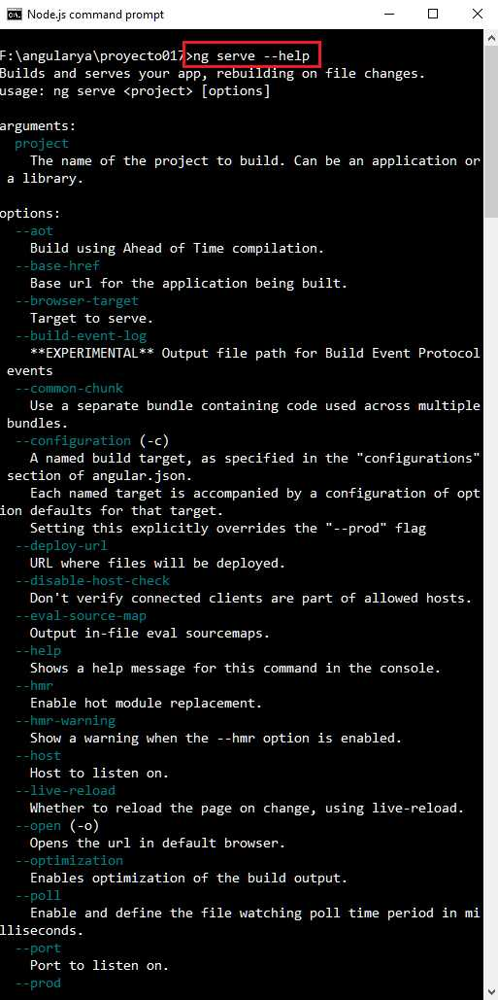
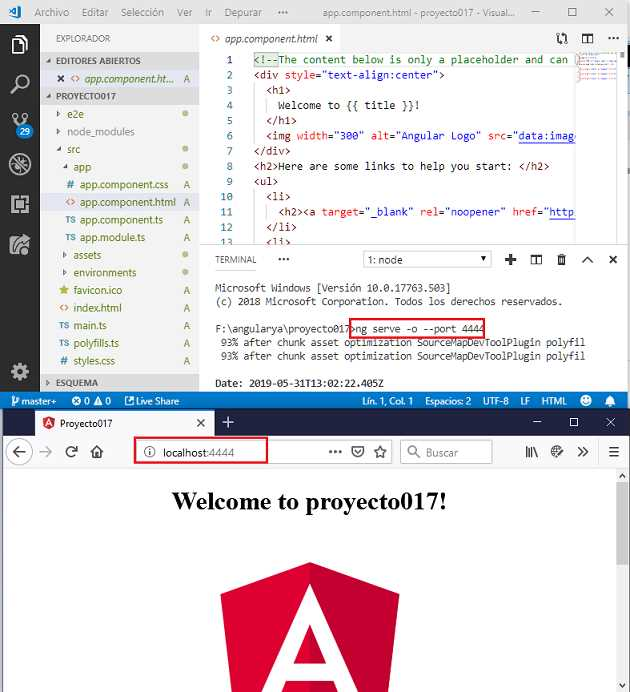

Otro comando que hemos utilizado en cada uno de los proyectos que hemos implementado es 'serve' (desde el principio hemos utilizado la opción -o):
ng serve -o
Recordemos que debemos ejecutar el comando serve en la carpeta donde se haya nuestra aplicación Angular. Al disponer la opción -o se abre automáticamente el navegador web. La sintaxis larga pero que produce la misma acción es:
ng serve --open
Para conocer todas las opciones disponibles en un comando de Angular CLI debemos acceder a la opción --help:
ng serve --help
Por defecto el servidor web local que crea Angular CLI se ejecuta en el puerto 4200, si necesitamos que el servidor web se ejecute en otro puerto podemos indicarlo con la opción --port en el momento de iniciarlo:
ng serve -o --port 4444
Por defecto cada vez que modificamos nuestro proyecto y grabamos los cambios el resultado se actualiza en el navegador en forma automática. En algunas situaciones si queremos que no se actualice debemos utilizar la opción 'watch' pasando el valor false:
ng serve -o -watch false
Ejecuta la aplicación con todas las optimizaciones que se hacen cuando se genera el código de producción.
ng serve -o --prod